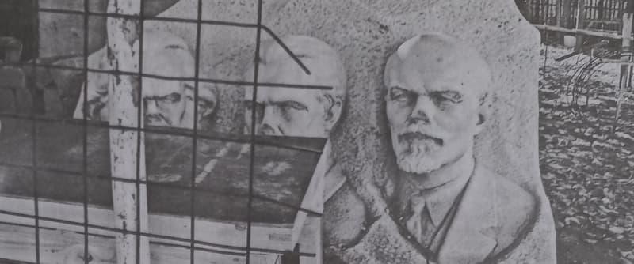

În anii '30 ai veacului trecut, Starețul Ignatie din Harbin (Manciuria) zicea așa: „Ceea ce a început în Rusia se va încheia în America!” La cincizeci de ani după proorocia acelui Stareț Ignatie, Cuviosul Părinte Serafim Rose zicea și el același lucru: „Ceea ce a trăit Rusia și alte țări se va întîmpla și aici!” Anume ce avea să vină și în America? Stăpînirea comunistă? Cu neputință de crezut, de vreme ce — nu-i așa? — America s-a întemeiat de la bun început ca „patrie a libertății”, iar comunismul (pus în lucrare mai întâi în Rusia) ce a însemnat înainte de toate? Nimic altceva decît schimbarea celei mai întinse și mai puternice țări din lume la vremea aceea într-o temniță cumplită, într-un loc al robiei și al muceniciei. Și totuși Părintele Serafim Rose proorocea „bolșevizarea” Americii, adăugind: „Nu putem spune acum în ce formă anume se va întîmpla aceasta și nu trebuie să ne isterizăm pentru acest lucru.”
Nu au trecut decît douăzeci de ani de la fericita adormire a Părintelui Serafim, și comunismul stalinist s-a mutat din Rusia în Statele Unite ale Americii, care s-au schimbat deja într-o necuprinsă pușcărie, al cărei temnicer-șef („președintele ales democratic”) a desființat însăși întemeierea drepturilor cetățenești, prin acea lege „a apărării” pe care a dat-o în 2001. Iar Americanii au primit-o! (E drept că pentru aceasta a fost nevoie de înscenarea cumplitei piese de teatru de la World Trade Center.) Căci ce zice, pe scurt, legea lui Bush? Că Statul American — pentru binele cetățenilor săi, firește! — poate și trebuie să urmărească viața privată a fiecăruia dintre ei oriunde și oricînd. S-a ajuns pînă acolo încît ofițerii Biroului Federal de Investigații nu mai au nevoie nici măcar de mandatul procuraturii pentru a-i „sălta” pe plătitorii de taxe și impozite din casele lor, la orice oră. (Nu mai vorbim de mandat pentru înregistrări, astea sunt copilării.) Cu adevărat, o așa sinceră tiranie nu s-a mai întîlnit decît în Rusia lui Stalin! Dar nici Stalin nu a visat a fi cu putință vreodată ca fiecare rob al împărăției lui să fie însoțit pururea și în orice loc de către un „agent” personal. Și iată că lucrul acesta se întîmplă, fiindcă ce altceva este așa-zisul „micro-cip”?
Să nu credem însă în „ciclicitatea” întîmplărilor istorice (precum zic acum tot felul de economiști în legătură cu „criza”). Istoria nu se repetă, ci anume întîmplări sunt înainte-închipuiri ale altora din viitor. De pildă, comunismul a fost înainte-închipuirea a ceea ce se numește astăzi „globalism”. Ce vreau să zic e că nu vom mai trăi în lumea lui Stalin și a lui Gheorghiu-Dej, ci într-una neînchipuit mai rea! Întocmai aceasta zicea și Părintele Serafim încă de acum treizeci de ani (într-o conferință din luna mai, 1981):
„Pricina pentru care comunismul a cuprins lumea nu se datorează faptului că ar fi mai inteligent decît capitalismul, sau democrația sau altceva asemănător, ci faptului că Apusul se află într-un vid sufletesc, iar comunismul nu face decit să înainteze în acest vid, cucerind teritoriu după teritoriu și ajungînd astăzi să cucerească aproape o jumătate de lume. Însă comunismul nu are ultimul răspuns, pentru că este ceva cu totul negativ. În fapt, dacă ne uităm la ceea ce s-a petrecut în Rusia în ultimii zece sau douăzeci de ani, asistăm la o revoltă desăvirșită în ce privește mentalitatea poporului, îndreptată împotriva întregului sistem comunist. Chiar dacă dictatura este la fel de tare ca totdeauna — mai ales în ultimii doi ani, cînd au început din nou arestările — și chiar dacă poliția este foarte puternică și atotprezentă, totuși poporul se ridică tot mai mult. Și nu se ridică la o luptă armată, ci la una în cugete, devenind de sine stătător. Ceea ce înseamnă că, mai devreme sau mai tîrziu, întreg sistemul se va prăbuși. Deci comunismul nu are soluția; nu poate cuceri lumea, aducîndu-i fericirea, așa cum pretinde. Dar, în același timp, el pregătește terenul pentru ceva foarte important ce trebuie să se întîmple înainte de sfârșitul lumii, iar acesta este guvernul mondial unic și unificat, din care creștinismul va fi fost scos afară. Iar pînă acum comunismul a făcut acest lucru cu foarte mult succes…”
Într-adevăr, trebuie înțeles bine că noua orînduire „globală” (ce s-a întemeiat deja în bună parte) nu este atît o lucrare omenească, ci de-a dreptul diavolească, deschizând drum scurtei stăpîniri a Antihristului celui mare. Iar semnul cel mai vădit că acum omenirea e pregătită să-l primească pe Antihrist stă în lepădarea de Dumnezeu și în cinstitea omului ca dumnezeu. Și aceasta s-a văzut limpede odată cu ateizarea întregii lumii, prin revoluțiile zise „comuniste”, care au lovit întîi de toate în Ortodoxie (revoluțiile bolșevice din Rusia, România, Bulgaria și Serbia), dar și în erezia papistașă (războiul civil spaniol, revoluțiile marxiste din America centrală și de sud) și în păgînisme (revoluția atee a lui Enver Hodja din Albania musulmană). Ateizarea a fost însă doar întîiul pas al marii apostazii, avînd ca scop ștergerea din mințile oamenilor, întîi de toate, a sfintelor dogme (adică a adevărurilor neschimbate) ale adevăratei credințe în Hristos-Dumnezeu. Și, înaintea tuturor, a dogmei Întrupării Domnului. Iată ce spune despre aceasta Cuviosul Iustin Popovici:
„Piscul adevărului este acesta: cel nu recunoaște întruparea lui Dumnezeu, a Dumnezeu-omului Iisus Hristos, nu este mădular al Bisericii. Mai mult: este un antihrist.
Această măsură fără greș o binevestește sfîntul și purtătorul de Hristos văzător de Dumnezeu și cunoscător al tainelor, Ioan Teologul: «Iubiților, să nu credeți la tot duhul, ci cercați duhurile de sînt de la Dumnezeu, căci mulți prooroci mincinoși au ieșit în lume. Întru aceasta să cunoașteți Duhul lui Dumnezeu: tot duhul care Îl mărturisește pe Iisus Hristos că a venit în trup este de la Dumnezeu; și tot duhul care nu Îl mărturisește pe Iisus Hristos că a venit în trup nu este de la Dumnezeu. Și acela este al lui Antihrist, despre care ați auzit că va veni și care acum este deja în lume» (1 Ioan 4:1-3; 2:22; 1 Corinteni 12:3).
În fapt, toate duhurile care locuiesc lumea noastră pămîntească sau care trec prin ea se împart în două soiuri: în cele de la Dumnezeu și în cele de la diavol. De la Dumnezeu sînt acelea care recunosc și mărturisesc că Iisus este Cuvîntul lui Dumnezeu întrupat, Mîntuitor și Domn; iar de la diavol, cele care nu recunosc aceasta. Toată «filosofia»1 diavolului stă în aceasta: a nu-L recunoaște pe Dumnezeu în lume; a nu recunoaște prezența Lui în lume; a nu recunoaște întruparea, înomenirea Lui în lume. […]
Aceasta este filosofia lui Antihrist, care vrea cu orice preț să-L înlocuiască pe Hristos și să-I ia locul în lume și în om. Sînt nenumărați înainte-mergătorii lui Antihrist, mărturisitorii și credincioșii lui în lumea omenească de-a lungul veacurilor: «tot duhul», iar duhul poate fi persoană, sau învățătură, sau idee, sau gînd, sau om, sau Înger, sau diavol. Și toată învățătura, toată persoana, toată ideea, tot gîndul, tot omul care nu recunoaște că Iisus este Dumnezeu și Mîntuitor, Dumnezeu întrupat și Dumnezeu-Om, își are obîrșia de la Antihrist, este a lui Antihrist. Iar astfel de persoane, și învățături și idei au existat chiar de la începutul arătării Domnului Hristos în lume. Pentru aceasta și zice sfîntul cunoscător al tainelor despre Antihrist: «și acum este». Orice om, orice idee din lume care Îl tăgăduiește pe Dumnezeu-omul Hristos și Biserica Lui este de la Antihrist. Plăsmuitorul oricărei ideologii anticreștine, în chip nemijlocit sau mijlocit, este Antihrist.
În fapt, toate ideologiile se pot reduce la două feluri: acelea care sînt pentru Hristos și acelea care sînt pentru Antihrist. În cele din urmă, omul se găsește în lumea aceasta pentru ca să dezlege o singură problemă: dacă este cu Hristos sau împotriva lui Hristos. Și orice om — fie că vrea, fie că nu — numai asta face: dezleagă problema aceasta, această atot-problemă. Și fiecare dintre noi este sau iubitor de Hristos, sau luptător împotriva lui Hristos: a treia cale nu este. Da, omul este închinător al lui Hristos sau este închinător al diavolului, a treia cale nu există.
Iar ateismul comunismului a fost lepădat în clipa în care își atinsese țelul: alungarea lui Hristos-Dumnezeu din inima omului Ortodox, și înlocuirea lui cu omul ca idol2. Iar acum pasul al doilea este a propovăduirea unei credințe înșelate, umaniste, care amestecă Ortodoxia nu numai cu eresurile creștine, dar și cu iudaismul și cu toate păgînismele. Numele acestei înșelări este „ecumenism” sau „globalism religios”. Aceasta voia să zică și Părintele Serafim, iar proorociile lui își găsesc împlinirea în zilele noastre. Lăsînd de-o parte Consiliul Mondial al Bisericilor, ați auzit de Inițiativa Religiilor Unite (înființată în 1995)? Despre aceasta, Robert Muller fost secretar general adjunct al O.N.U.) zicea așa: „Rolul și responsabilitatea Organizației Religiilor Unite și a Parlamentului Mondial al Religiilor […] va fi acela de a da omenirii o nouă ideologie spirituală, planetară și cosmică, menită să înlocuiască moștenirea comunismului și capitalismului.” „Totodată, zicea Muller, O.N.U. va trebui să acționeze viguros împotriva fundamentalismului religios.”
Toate semnele arată că trăim la sfîrșitul acestei lumi și că orice reînviere din afară a Ortodoxiei este vremelnică. Însă, precum spunea Cuviosul Serafim Rose, trebuie să ne străduim pentru învierea noastră duhovnicească, lăuntrică, pentru învierea adevăratului creștinism pătimitor.
Într-adevăr, mulți văd că împărăția răului se întinde ca niciodată în trecut și mulți se întreabă cum s-ar putea feri din calea urgiei. Aceasta e judecata trupească a necredincioșilor, care ar vrea să se înveșnicească pe acest pămînt stricat de patimile și fărădelegile noastre. Și, firește, „scăpare” nu va fi pentru ei, de vreme ce lumea aceasta trebuie să se înnoiască (prin foc, așa cum s-a mai înnoit și prin apă). Ce se întîmplă însă cu noi, cei botezați întru Hristos, care judecăm întocmai ca și aceia și nu voim nicicum să primim Crucea Lui? Ba chiar să ne bucurăm pentru sfîrșitul acestei lumi a păcatului, pentru închiderea veșnică în iezerul cel de foc a stăpînitorului acesteia și, mai ales, pentru a doua venire a Mîntuitorului, cînd morții vor învia și drepții vor locui împreună cu El în Cetatea Noului Ierusalim. Adevărul este că în inima lor cei mai mulți dintre oameni — fie nebotezați, fie și botezați — îl așteaptă pe Antihristul cel mare, căci altminteri stăpînirea lui nici nu ar fi cu putință. Acest lucru este de înfricoșare, precum scria Sfîntul Episcop Ignatie Briancianinov, în urmă cu aproape un veac și jumătate:

„Înfricoșătoare nenorocire este lipsa din om a adevăratei cunoașteri de Dumnezeu, care îl face să primească lucrările diavolilor drept lucrări ale lui Dumnezeu. Înaintea celei de a doua veniri a lui Hristos — cînd Creștinismul, cunoașterea duhovnicească și dreapta socotință se vor împuțina cum nu se poate mai mult între oameni — «se vor scula hristoși mincinoși și prooroci mincinoși și vor da semne mari și minuni, ca să amăgească, de va fi cu putință, și pe cei aleși» (Matei 24:24). Mai ales Antihrist însuși va săvîrși minuni cu îmbelșugare, uimind și împlinind prin ele cugetarea trupească și neștiința; el le va da semnul din cer pe care acestea îl așteaptă și de care însetează. «Venirea lui se va săvîrși prin lucrarea Satanei, însoțită de tot felul de puteri, și de semne și de minuni ale minciunii și întru toată amăgirea nedreptății întru cei pieritori; pentru că dragostea adevărului n-au primit, ca să se mîntuiască» (2 Tesaloniceni 2:6, 10). Neștiința și cugetarea trupească, văzînd acele minuni, le vor primi fără întîrziere, potrivit înrudirii duhului propriu cu duhul acelor minuni, socotind și mărturisind lucrarea Satanei drept o lucrare cît se poate de mare a puterii lui Dumnezeu.
Nu e ciudat faptul că minunile lui Antihrist vor fi primite fără împotrivire și cu entuziasm de către cei apostaziați de la Creștinism, de către vrăjmașii adevărului, vrăjmașii lui Dumnezeu; aceștia s-au pregătit pe sine pentru primirea pe față, cu lucrul, a trimisului și uneltei Satanei, a învățăturii lui, a tuturor lucrărilor lui, după ce au intrat dinainte în împărtășire după duh cu Satana. Este însă vrednic de tînguire faptul că minunile și lucrările lui Antihrist îi vor pune în încurcătură pe înșiși aleșii lui Dumnezeu3. Pricina puternicei înrâuriri a lui Antihrist asupra oamenilor va sta în viclenia și fățărnicia lui satanică, prin care va ascunde cu iscusință cea mai cumplită răutate, în neînfrînata și nerușinata lui obrăznicie, în prea-îmbelșugata împreună-lucrare cu el a duhurilor căzute, în fine, în putința de a face minuni, deși mincinoase, însă uimitoare. El va trîmbița despre sine precum au trîmbițat înainte-mergătorii și icoanele sale, se va numi pe sine propovăduitor și restaurator al adevăratei cunoașteri de Dumnezeu; cei care nu înțeleg Creștinismul vor vedea în el propovăduitorul și apărătorul religiei și se vor uni cu el. El va trîmbița despre sine că este și se va numi pe sine «Mesia» cel făgăduit; ieșind întru întîmpinarea lui, fiii cugetării trupești vor striga osanale; văzîndu-i slava, puterea, dezvoltarea cît se poate de cuprinzătoare «după stihiile lumii»4, îl vor propovădui ca dumnezeu și se vor face ajutoare ale lui. Cei ce socot că dreptatea omului este dreptatea căzută și nu s-au lepădat de aceasta pentru evanghelie îl vor socoti pe Antihrist împlinitor a toată fapta bună și i se vor închina pe temeiul acesteia. Antihrist va îmbia lumea cu cea mai mare bunăstare pămîntească, va îmbia cu cinstire, bogăție, măreție, înlesniri și plăceri trupești; căutătorii de cele pământești îl vor primi pe Antihrist, îl vor numi «stăpîn» al lor. Antihrist va înfățișa omenirii, asemenea meșteșugitelor reprezentații de teatru, o priveliște de minuni cu neputință de tălmăcit de către știința vremii; el va înfricoșa prin caracterul înspăimîntător și neobișnuit al minunilor sale, va împlini prin ele curiozitatea nechibzuită și neștiința grosolană, va împlini slava deșartă, va împlini superstiția, va descumpăni știința omenească; toți oamenii ce se călăuzesc după lumina firii lor căzute, ce s-au înstrăinat de călăuzirea după lumina lui Dumnezeu, vor fi atrași sub stăpînirea amăgitorului (Apocalipsa 13:8). […] Căci cei mînați de duhul lui Antihrist Îl leapădă pe Hristos, l-au primit pe Antihrist cu duhul lor, au intrat în împărtășire cu el, s-au supus și s-au închinat lui în duh, recunoscîndu-l drept dumnezeu al lor. Drept aceea, «Dumnezeu le trimite o lucrare de amăgire, ca ei să creadă minciunii, ca să fie osîndiți toți cei ce n-au crezut adevărul, ci au binevoit întru nedreptate» (2 Tesaloniceni 2:11-12)5. […]
Prin lepădarea de Hristos, omenirea se va pregăti pentru primirea lui Antihrist, îl va primi în duhul său. În însăși întocmirea duhului omenesc se va ivi cererea, chemarea lui Antihrist, împreună-simțirea cu el, așa cum în starea de boală grea se ivește setea de o băutură ucigătoare. Poftirea va fi rostită! Va răsuna glasul chemător în omenire, care va arăta stăruitor că are trebuință de un «geniu al geniilor», care să ridice dezvoltarea și propășirea materială pe cea mai înaltă treaptă, care să încetățenească pe pămînt o asemenea bunăstare, încît raiul și cerul să devină de prisos pentru om. Antihrist va fi urmarea logică, îndreptățită și firească a orientării morale și duhovnicești a oamenilor. […] Duhurile viclene, răspîndite în lume, vor stîrni în oameni o părere de obște cît se poate de înaltă despre Antihrist, un entuziascm general, o atracție de nebiruit către el. Iar potrivnicii lui Antihrist vor fi socotiți făcători de tulburare, vrăjmași ai binelui obștesc și ai rînduielii sociale, vor fi supuși prigoanei pe față și într-ascuns, vor fi supuși la cazne și pedepse”
1 Ateismul este și el o „religie”, adică se întemeiază pe credința într-o făptură atot-puternică, doar că pentru ateu acest „dumnezeu” e însuși omul. Această „religie laică” este propovăduită în toată lumea de către Mișcarea Umanistă (avem și noi Partidul Umanist din România), Să citim cîte ceva din Manifestului Umanist I, din 1933: „Deși această epocă le este datoare cu prisosință religiilor tradiționale, nu e mai puțin evident că orice religie care poate spera să fie o forță dinamică și sintetizatoare a zilelor noastre trebuie să fie reformată conform necesităților acestei epoci. Înființarea unei asemenea religii este în prezent o necesitate majoră. […] Umaniștii religioși consideră universul ca find de la sine, nu creat.” În 1973, Umaniștii au scos un al doilea manifest, în care se zice: „La fel ca în 1933, umaniștii încă mai cred că teismul tradițional, și mai cu seamă credința într-un Dumnezeu care aude rugăciunile - presupus a iubi oamenii, a avea grijă de ei și a putea face ceva pentru ei - e o credință veche și demodată. Nici o zeitate nu ne va salva; trebuie să ne salvăm singuri. […] Specia umană e un rezultat al fenomenelor evolutive naturale. […] Etica e autonomă și situațională, neavînd nevoie de nici o aprobare teologică sau ideologică. […] Rațiunea și inteligența sunt cele mai eficiente instrumente pe care le posedă omenirea. Nu există nici un substitut” (Noua Ordine Mondială, de Ralph Epperson).
Mișcarea Umanistă din America este deosebit de puternică; să amintim cîteva nume ale acelora care au primit premiul „Umanistul anului”. În 1981, Carl Sagan, vestitul astronom American Evreu, reprezentantul „panteismului științific”. El zice că „universul este singura divinitate, natura este singurul rai adevărat. Apoi, în 1984, Isaac Asimov, autorul de scrieri științifico-fantastice; în 1986, Faye Wattleton, președintă a Federației de Planning Familial. Trebuie amintită și marxista Madalyn Murray O' Hair, femeia care a numit religia „excrementul mintal al omului primitiv” și care a izbutit. Să scoată rugăciunile și citirea Bibliei din școlile publice americane. De altfel, guvernul Statelor Unite a recunoscut „Umanismul laic” ca fiind religie, ea predîndu-se în școlile publice.
2 Adică pe cei botezați, pe Ortodocși.
3 Coloseni 2:8.
4 „Lucrare de amăgire — tâlcuiește Teofilact - numește faptele pe care le va face Antihrist ca să-i amăgească pe oameni; sau și pe Antihrist L-a numit «lucrare a amăgirii», căci el însuși va fi lucrare a Satanei pentru a-i amăgi pe mulți. [Și] de vreme ce necredincioșii ar fi tot nesupuși chiar dacă nu ar veni Antihrist, Pavel a zis: «să fie osîndiți» fără răspundere (apărare, n. m). Fiindcă ce răspuns ar mai avea de dat necredincioșii, și mai ales Evreii? Negreșit nici unul! Căci — de vor zice: Nu am crezut în Hristos pentru că ucenicii Lui Îl propovăduiau ca Dumnezeu, iar noi am auzit că unul este Dumnezeu, de Care s-au făcut toate făpturile — de vor zice așa, noi le vom răspunde: Atunci cum ați crezut în Antihrist, care se făcea pe sine-și Dumnezeu? Căci Hristos înălța la Tatăl toate lucrările Sale, zicînd: «Eu am venit întru numele Tatălui Meu, și nu Mă primiți» (Ioan 5:43); iar Antihrist va spune că roate sînt lucrări ale sale, căci zice Domnul: «De va veni cineva întru numele său, pe acela îl veți primi» (la fel). Iar dacă necredincioșii vor pune ca pricină că au văzut semne și minuni, și de aceea au crezut întru Antihrist, noi le vom răspunde: Și Hristos a făcut multe și mari minuni! Și atunci, de ce nu ați crezut într-Însul? — mai ales că Hristos Se propovăduise de către Prooroci ca mîntuitor al lumii, iar Antihrist se vestise că este fiu al nelegiuirii și al pieirii. Așadar, pentru toate acestea, necredincioșii au să se judece, rămînînd fără răspuns. Căci, lăsînd adevărul, «au bine-voit», adică le-a plăcut și cu bucurie s-au adăugat «întru nedreptate», adică făcătorului de stricăciune Antihrist, care a adunat la sine toată nedreptatea sufletelor omenești, fiind însăși nedreptatea” (în tîlcuirea epistolelor lui Pavel).
5 Precum am auzit eu însumi un Ortodox, care zicea că „așa cum mai demult au venit (de unde?) Budha, Hristos și Mahomed - tot astfel e nevoie de venirea altui conducător care să ne salveze.” Acesta era un om simplu, dar el propovăduia, Firă să știe, învățătura „teologică” a zilelor noastre.
AXA AFIRMĂ – NU RĂSTĂLMĂCEȘTE ȘI NU ÎȘI ÎNCHIPUIE